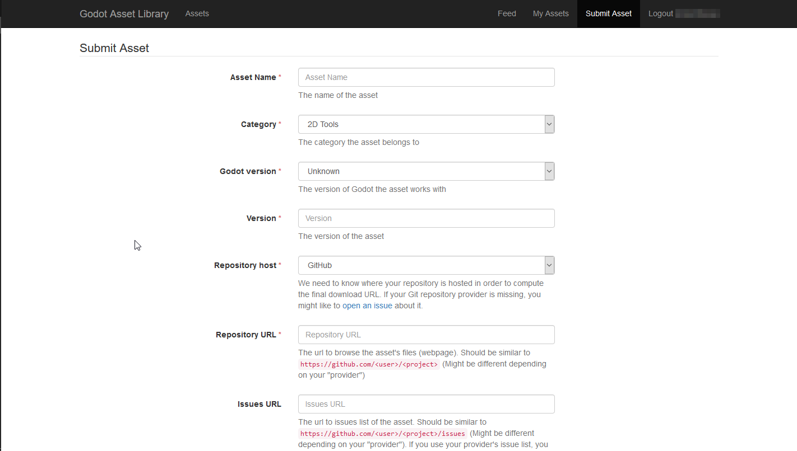

Gửi lên Asset Library
Giới thiệu
Bài hướng dẫn này nhằm chỉ dẫn cách bạn có thể gửi asset của riêng mình lên Godot Asset Library và chia sẻ chúng với cộng đồng Godot.
Như đã đề cập trong tài liệu Sử dụng Asset Library, để có thể gửi asset lên AssetLib, bạn cần có một tài khoản đã đăng ký và đã đăng nhập.
Nguyên tắc gửi asset
Trước khi gửi asset, hãy đảm bảo nó đáp ứng mọi yêu cầu, đồng thời cân nhắc làm theo các khuyến nghị.
Yêu cầu
Nói chung, phần lớn asset mà mọi người gửi lên asset library đều được chấp nhận. Tuy nhiên, để asset của bạn được chấp nhận, nó cần đáp ứng một vài yêu cầu để được phê duyệt.
Asset phải hoạt động được. Nếu asset không chạy hoặc không hoạt động trong phiên bản Godot được chỉ định, nó sẽ bị từ chối.
Asset phải có tệp .gitignore phù hợp. Việc giữ dữ liệu dư thừa ra khỏi kho mã rất quan trọng. Đây là một mẫu.
Không có submodule, hoặc mọi submodule đều phải là không thiết yếu. GitHub không đưa submodule vào tệp ZIP được tải xuống, vì vậy nếu asset cần nội dung của submodule thì asset của bạn sẽ không hoạt động.
Giấy phép cần phải chính xác. Giấy phép được ghi trên asset library phải khớp với giấy phép trong kho mã. Kho mã BẮT BUỘC phải có tệp giấy phép, tên là "LICENSE" hoặc "LICENSE.md". Tệp này phải chứa chính văn bản giấy phép và một tuyên bố bản quyền bao gồm (các) năm và chủ sở hữu bản quyền.
Dùng tiếng Anh chuẩn cho tên và mô tả asset. Điều này bao gồm viết hoa đúng cách và dùng câu hoàn chỉnh trong phần mô tả. Bạn cũng có thể thêm các ngôn ngữ khác, nhưng ít nhất phải có một phiên bản tiếng Anh.
Liên kết biểu tượng phải là liên kết trực tiếp. Với biểu tượng được lưu trữ trên GitHub, liên kết phải bắt đầu bằng "raw.githubusercontent.com", không phải "github.com".
Khuyến nghị
Những điều này không bắt buộc để asset của bạn được phê duyệt, nhưng nếu bạn làm theo các khuyến nghị này, bạn có thể giúp asset library trở thành một nơi tốt hơn cho mọi người dùng.
Khi tạo asset không phải dự án, thông lệ phổ biến là đặt các tệp của bạn bên trong thư mục addons/asset_name/. Hãy làm vậy để tránh tệp của bạn xung đột với các asset khác, hoặc với tệp của người dùng đang cài asset của bạn. Thư mục này sẽ không được tự động tạo khi người dùng cài asset của bạn.
Sửa hoặc ẩn mọi cảnh báo của script. Hệ thống cảnh báo có mặt để giúp phát hiện vấn đề trong mã của bạn, nhưng những người dùng asset của bạn không cần thấy chúng.
Làm cho mã của bạn tuân theo hướng dẫn phong cách chính thức. Phong cách nhất quán giúp người khác đọc mã của bạn, và cũng có ích nếu người khác muốn đóng góp cho asset của bạn. Xem: Hướng dẫn phong cách GDScript hoặc Hướng dẫn phong cách C#.
Nếu bạn có ảnh chụp màn hình trong kho mã, hãy đặt chúng vào một thư mục con riêng và thêm một tệp .gdignore rỗng trong cùng thư mục đó (lưu ý: gd, không phải git). Điều này ngăn Godot import ảnh chụp màn hình của bạn. Trên Windows, hãy mở cửa sổ dòng lệnh trong thư mục dự án và chạy
type nul > .gdignoređể tạo một tệp có tên bắt đầu bằng dấu chấm.Nếu asset của bạn là một thư viện để làm việc với các tệp khác, hãy cân nhắc đưa tệp ví dụ vào asset.
Hãy cân nhắc thêm tệp .gitattributes vào kho mã. Tệp này cho phép đưa thêm chỉ dẫn cho Git, chẳng hạn như chỉ định ký tự xuống dòng và liệt kê các tệp không cần thiết để asset hoạt động bằng chỉ thị
export-ignore. Chỉ thị này loại bỏ các tệp đó khỏi tệp ZIP kết quả, ngăn người dùng asset library tải chúng xuống. Đây là các ví dụ phổ biến về .gitattributes:# Normalize line endings for all files that Git considers text files. * text=auto eol=lf
# Normalize line endings for all files that Git considers text files. * text=auto eol=lf # Only include the addons folder when downloading from the Asset Library. /** export-ignore /addons !export-ignore /addons/** !export-ignore
Nếu bạn gửi một plugin, hãy thêm một bản sao của giấy phép và tệp readme vào chính thư mục plugin. Đây là thư mục mà người dùng chắc chắn sẽ giữ lại trong dự án, nên bản sao này đảm bảo họ luôn có sẵn các tệp đó (và giúp họ tuân thủ các điều khoản giấy phép của bạn).
Mặc dù asset library cho phép dùng nhiều dịch vụ ngoài GitHub, hãy cân nhắc lưu trữ mã nguồn asset của bạn trên GitHub. Các dịch vụ khác có thể hoạt động không ổn định, và việc không quen thuộc có thể là rào cản đối với người đóng góp.
Gửi asset
Sau khi đăng nhập, bạn có thể vào trang "Submit Assets" của AssetLib, trang này trông như sau:

Dù có vẻ nhiều (và còn nhiều hơn khi bạn cuộn xuống), mỗi trường đều có mô tả về nội dung bạn nên điền. Dù vậy, chúng tôi vẫn sẽ điểm qua những gì cần thiết trong biểu mẫu gửi tại đây.
- Asset Name:
Tên asset của bạn. Nên là một tiêu đề duy nhất, mô tả rõ asset của bạn là gì.
- Category:
Danh mục mà asset của bạn thuộc về, và sẽ được hiển thị trong kết quả tìm kiếm. Danh mục được chia thành Addons và Projects. Trong trình chỉnh sửa, các asset thuộc loại Project (Templates, Demos, Projects) chỉ xuất hiện khi xem AssetLib từ Project Manager, còn asset thuộc loại Addon chỉ hiển thị từ bên trong một dự án.
- Godot version:
Phiên bản engine mà asset hoạt động. Hiện tại, một mục asset không thể chứa bản tải xuống cho nhiều phiên bản engine, vì vậy bạn có thể cần gửi lại asset nhiều lần, mỗi mục cho một phiên bản Godot mà nó hỗ trợ. Điều này đặc biệt quan trọng khi làm việc với các phiên bản chính của engine, như Godot 2.x và Godot 3.x.
- Version:
Số phiên bản của asset. Dù bạn có thể tùy ý chọn và dùng bất kỳ cách đánh số phiên bản nào, bạn có thể muốn tìm hiểu một chuẩn như SemVer nếu muốn cách đánh số phiên bản của asset rõ ràng và nhất quán. Lưu ý rằng còn có một số phiên bản nội bộ, được tăng lên mỗi khi URL tải xuống của asset bị thay đổi hoặc cập nhật.
- Repository host:
Asset được tải lên AssetLib không được lưu trữ trực tiếp trên đó. Thay vào đó, chúng trỏ đến các kho mã được lưu trữ trên các nhà cung cấp Git bên thứ ba, như GitHub, GitLab hoặc Bitbucket. Đây là nơi bạn chọn nhà cung cấp mà asset của bạn sử dụng, để trang web có thể tính ra liên kết tải xuống cuối cùng.
- Repository URL:
URL đến tệp/trang web của asset. URL này sẽ khác nhau tùy theo nhà cung cấp bạn chọn, nhưng sẽ có dạng tương tự https://github.com/<user>/<project>.
- Issues URL:
URL đến trình theo dõi issue của asset. Một lần nữa, URL này sẽ khác nhau giữa các dịch vụ lưu trữ kho mã, nhưng nhiều khả năng sẽ có dạng tương tự https://github.com/<user>/<project>/issues. Bạn có thể để trống trường này nếu dùng trình theo dõi issue của nhà cung cấp và nó thuộc cùng kho mã.
- Download Commit:
Commit của asset. Ví dụ: b1d3172f89b86e52465a74f63a74ac84c491d3e1. Trang web sẽ tính ra URL tải xuống thực tế từ giá trị này.
- Icon URL:
URL đến biểu tượng của asset (sẽ được dùng làm hình thu nhỏ trong kết quả tìm kiếm của AssetLib và trên trang của asset). Đây phải là một hình ảnh ở định dạng PNG hoặc JPG.
Biểu tượng phải là hình vuông (tỉ lệ khung hình 1:1). Nó nên có độ phân giải tối thiểu 128×128 pixel.
Ghi chú
Với biểu tượng được lưu trữ trên GitHub, URL phải có dạng https://raw.githubusercontent.com/<user>/<project>/<branch>/Icon.png.
- License:
Giấy phép mà bạn dùng để phân phối asset. Danh sách bao gồm nhiều giấy phép phần mềm tự do và mã nguồn mở, như GPL (v2 và v3), MIT, BSD và Boost Software License. Bạn có thể truy cập OpenSource.org để xem mô tả chi tiết về từng giấy phép trong danh sách.
- Description:
Cuối cùng, bạn có thể dùng trường Description để viết phần tổng quan dạng văn bản về asset, các tính năng và hành vi của nó, nhật ký thay đổi, v.v. Trong tương lai, định dạng bằng Markdown sẽ được hỗ trợ, nhưng hiện tại bạn chỉ có thể dùng văn bản thuần.
Bạn cũng có thể thêm tối đa ba bản xem trước dạng video và/hoặc hình ảnh, chúng sẽ được hiển thị ở cuối trang asset. Dùng checkbox "Enable" trên mỗi ô gửi bản xem trước để bật chúng.
- Type:
Một hình ảnh hoặc một video.
- Image/YouTube URL:
Liên kết đến hình ảnh, hoặc đến một video được lưu trữ trên YouTube.
- Thumbnail URL:
URL đến một hình ảnh sẽ được dùng làm hình thu nhỏ cho bản xem trước. Tùy chọn này cuối cùng sẽ bị loại bỏ, và thay vào đó hình thu nhỏ sẽ được tạo tự động.
Khi hoàn tất, hãy nhấn "Submit". Asset của bạn sẽ được đưa vào hàng đợi duyệt. Bạn có thể xem tất cả asset đang chờ duyệt tại đây . Quá trình duyệt được thực hiện thủ công và có thể mất đến vài ngày để asset của bạn được chấp nhận (hoặc bị từ chối), vì vậy hãy kiên nhẫn!
Bạn sẽ được thông báo khi asset của bạn được duyệt. Nếu bị từ chối, bạn sẽ được cho biết lý do có thể là gì, và bạn có thể gửi lại sau khi thực hiện các thay đổi phù hợp.